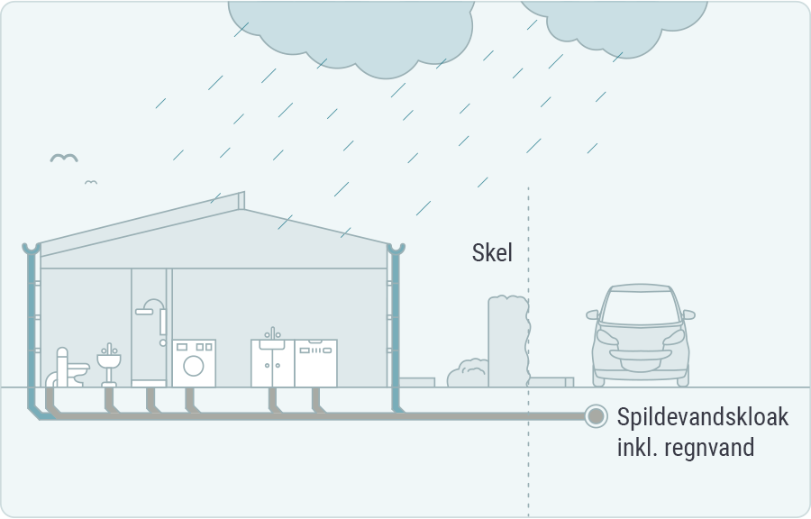

Regler og retningslinjer
Indledning
Afsnittet her tydeliggøre de retningslinjer Egedal Kommunes Center for Teknik og Miljø ønsker at sagsbehandlingen på spildevandsområdet skal ske efter. Der kan i helhedsvurderingen af den enkelte sag være forhold til anden planlægning, anden lovgivning, landskabelige hensyn eller andre hensyn, der gør, at der skal afviges fra de generelle regler omtalt i dette afsnit. Enhver afgørelse skal baseres på en konkret vurdering, og der skal altid tages hensyn til de almindelige forvaltningsretlige krav om proportionalitet, lighed, pligtmæssigt skøn med videre.
Spildevandstyper
Ved spildevand forstås alt vand, der afledes fra beboelse, erhvervsvirksomheder og bebyggelse i øvrigt. Spildevand omfatter således eksempelvis husspildevand, processpildevand (fra virksomheder), kølevand, filterskyllevand, m.v. Tag- og overfladevand fra befæstede arealer er i lovens forstand også defineret som spildevand, men benævnes i denne plan som tag- og overfladevand. Ved befæstede arealer forstås eks. arealer som veje, kørearealer, fortove og parkeringsarealer. Vand fra befæstede arealer kan enten afledes til spildevandssystemet eller til regnvandssystemet, afhængigt af, hvor forurenet vandet er. Tag- og overfladevand fra boligområder afledes til regnvandskloak, hvis der er regnvandskloakeret, og ikke kan nedsives. Overfladevand fra veje, parkeringsarealer m.v. afledes som udgangspunkt altid til regnvandsledningen. Derimod vil overfladevand fra vaskepladser, oplagspladser samt perkolat fra lossepladser typisk have et indhold af forurenende stoffer, der medfører, at det skal håndteres efter retningslinjer gældende for spildevand, og derfor skal vandmængden neddrosles og tilledes renseanlæg, eller renses inden tilslutning til regnvandsledningen. Vand fra omfangsdræn ved kloakerede bygninger betragtes som tag- og overfladevand, og skal i separatkloakerede oplande tilføres regnvandsledningen, mens det i fælleskloakerede oplande skal tilføres fællesledningen. Hvis der separatkloakeres i fælleskloakerede områder, er grundejer forpligtet til at føre omfangsdrænet til regnvandsledningen. Andre typer drænvand som eks. markdræn, dræn fra fodboldbaner og andre grønne arealer, grundvandssænkende dræn m.v. betragtes hverken som spildevand eller tag- og overfladevand, men som drænledninger/vandløb. Drænledninger er private anlæg, og det er altid grundejer, der skal vedligeholde disse (der kan eventuelt foreligge en partsfordeling, der definerer udgiftsfordelingen mellem private lodsejere). Dræn, der går henover 3. parts ejendom, skal håndteres via vandløbslovgivningen.
Kloakeringstyper
Fælleskloakerede områder
I disse områder er der kun én hovedkloakledning, der modtager både tag- og overfladevand og spildevand. Her vil der kun være én stikledning til den enkelte ejendom. Der udføres ikke nye byggemodninger efter dette kloakeringsprincip.

Separatkloakerede områder
I de separatkloakerede områder vil der være to hovedkloakledninger. Én til spildevand og én til tag- og overfladevand. I disse områder vil der som regel være to stikledninger til den enkelte ejendom. Hvis ejendommen ikke har et regnvandsstik, skal tag- og overfladevand håndteres på egen grund. Grundejer har altid pligt til at aflede spildevand via spildevandsstikket, hvorimod der som regel kan gives tilladelse til at håndtere regnvand på egen grund. Grundejer er ansvarlig for, at tilslutningen er sket til de korrekte stikledninger.
Spildevandskloakerede områder
Disse områder bygger på separeringsprincippet, men i disse områder er der kun etableret én hovedkloakledning som afleder spildevand. Bortskaffelsen af tag- og overfladevandet fra området skal ske ved privat foranstaltning enten ved nedsivning eller ved udledning til recipient. Nedsivning og udledning kræver særskilt tilladelse.

Spildevands- og vejvandskloakerede områder
Disse områder bygger på separeringsprincippet, hvor der er én hovedkloakledning til spildevand og én ledning til vejvand. Vejvandssystemet er som regel ejet af kommunen eller grundejerforeningen. Bortskaffelsen af tag- og overfladevandet fra den enkelte ejendom skal ske ved privat foranstaltning enten ved nedsivning eller ved udledning til sø/vandløb. Nedsivning og udledning kræver særskilt tilladelse.
Vejvandskloakeret
Enkelte vejstrækninger er etableret med et afløbssystem til håndtering af vejvand alene. Det er ikke tilladt at tilslutte/udlede spildevand eller tag- og overfladevand til disse anlæg.
Ejerskab, ansvar og rettigheder
For yderligere oplysninger om fordeling af ejerskab, ansvar og rettigheder mellem selskab, grundejer og kommune henvises til Novafos´ leveringsbestemmelser (betalingsvedtægt), som kan ses på Novafos’ hjemmeside.
Forsyningsselskabets ejerskab og ansvar Novafos drifter og vedligeholder afløbsledninger, bassiner, pumpestationer og renseanlæg m.m., som Novafos ejer, samt den lokale tømningsordning.
Novafos er ansvarlig for, at det afløbssystem, som Novafos ejer, er dimensioneret korrekt i henhold til de normer, der var gældende på etableringstidspunktet. Der vil således opleves forskellige serviceniveauer for de enkelte afløbsledninger i forhold til ledningernes alder.
Tilslutningsret- og pligt
Grundejers rettigheder og pligter
Ejere af fast ejendom indenfor kloakoplande er, i henhold til Miljøbeskyttelseslovens § 28, forpligtet til at tilslutte sig et spildevandsanlæg, når forsyningen har ført en stikledning frem til skellet på ejendommen eller til et privat fælles spildevandsanlæg.
Når en ejendom er beliggende indenfor et kloakopland, angivet i spildevandsplanen, har ejeren ret til at blive tilkoblet forsyningens spildevandsanlæg, når der er ført stik frem til skel.
Novafos skal sikre, at grundejer kan aflede spildevandet fra stueplan ved gravitation. Det er grundejernes eget ansvar at sørge for afledning af spildevand fra kælderen, og at sikre denne mod oversvømmelser.
Grundejere, der har ejendomme beliggende udenfor offentligt kloakerede områder, har pligt til at sørge for, at deres spildevandshåndtering på ejendommen sker i henhold til de bestemmelser, der er for spildevandshåndtering i det åbne land. Såfremt ejendommene har en renseforanstaltning, der omfatter en bundfældningstank, har ejendommene pligt til at deltage i kommunens tømningsordning.
Grundejere har pligt til at ansøge kommunen om tilladelse før der laves ændringer i ejendommens afløbsforhold, og arbejdet skal udføres af en autoriseret kloakmester. Tilladelser vil blive givet i overensstemmelse med spildevandsplanens bestemmelser. Ved nybyggeri og udvidelser, der kræver ændringer af ejendommens kloaksystem, skal afløbskoefficienten fortsat overholdes.
Grundejerne har ansvar for drift og vedligehold af eget kloaksystem på egen matrikel - herunder den del af afløbsledningen, som er beliggende på ejendommen. Hvis der opstår problemer med kloakken på matriklen, er grundejeren selv ansvarlig for at kontakte og betale en kloakmester eller entreprenør, der kan løse problemerne. Det er grundejers ansvar, at afløbsnettet på matriklen er intakt, så rotter ikke kan få adgang til huset eller det fri. Grundejerne har endvidere ansvaret for drift og vedligehold af fælles-private kloaksystemer, hvis de er del af et fælles-privat spildevandslaug.
For produktionsvirksomheder gælder særlige regler for kvaliteten af spildevand.
Udtræden, tilbagebetaling og genindtræden
Egedal Kommune er indstillet på at ophæve tilslutningspligten for regnvand for alle ejendommen i kommunen, såfremt ejeren måtte ønske det og kan redegøre for alternativ bortskaffelse af regnvandet på en måde, så kommunen kan acceptere det. Det kan være ved nedsivning eller udledning til nærliggende vandløb.
Hvis en grundejer ønsker at træde ud af kloakforsyningen for regnvand og selv stå for afledningen af regnvand til lokal recipient eller ved nedsivning, skal kommunen godkende projektet på forhånd. Kommunen vurderer, om den foreslåede afledning af regnvand er teknisk og miljømæssigt forsvarlig.
Reglerne for udtræden af kloakforsyningen fremgår at betalingsvedtægterne for Egedal Spildevand A/S, som kan ses på Novafos’ hjemmeside. Kommunen skal ansøges om tilladelse til alternativ afledning af tag- og overfladevand, fx nedsivning og om tilladelse til udtræden af kloakfællesskabet for regnvand (i henhold til Spildevandsbekendtgørelsen § 16, stk.1).
Delvis tilbagebetaling af tilslutningsbidraget
Hvis en ejendom udtræder for tag- og overfladevand, har Egedal Spildevand A/S mulighed for at tilbagebetale op til 40 % af gældende standardtilslutningsbidrag, som fremgår af selskabets takstblad. Reglerne for tilbagebetaling fremgår af betalingsvedtægten.
Genindtræden
Efter at en ejendom er helt eller delvist udtrådt af kloakforsyningen har ejendommen ikke længere ret eller pligt til at bortlede tag- og overfladevand til afløbssystemet. En generhvervelse af ejendommens tilslutningsret og -pligt kræver sagsbehandling, som var der tale om nykloakering. Det vil medføre, at Spildevandsplanen skal opdateres, og at ejendommen igen skal indgå i kloakområde for regnvand. Kommunen skal enten udarbejde et tillæg til Spildevandsplanen, før genindtræden kan ske, eller medtage ejendommen i forbindelse med revision af hele Spildevandsplanen. Reglerne for genindtræden fremgår af betalingsvedtægten (link)
Byggemodning
Hvis en bygherre ønsker sikkerhed for efterfølgende offentlig overtagelse af et privat udført kloakanlæg, skal der inden projektering påbegyndes, være indgået en skriftlig byggemodningsaftale med Novafos A/S om udførelsen af anlægget. Hvis en bygherre ønsker at spildevandsanlægget skal forblive privat (fælles-privat), skal der etableres et spildevandslaug med tilhørende vedtægter, som fastlægger grundejernes ejerskab, ansvar for vedligeholdelse og fordeling af udgifter. Spildevandslauget skal være nedsat inden anlægsarbejdet påbegyndes, hvis der på det tidspunkt er mere end en ejer involveret eller senest på det tidspunkt, hvor der sker udstykning, og der da bliver mere end en ejer af kloakanlægget. Vedtægter for et privat spildevandslaug skal godkendes af byrådet/kommunalbestyrelsen. I byggemodningsforløbet skal spørgsmål om håndtering af regnvand behandles tidligst muligt, således at de egnede løsninger kan komme i betragtning og indgå effektivt og tilfredsstillende i gennemførelse af projekterne. Ved nyanlæg og større ombygninger skal regnvandshåndteringen være fremtidssikret med klimafremskrivning jf. afsnit om dimensionering. Vær opmærksom på, at der ved tilslutning til eksisterende kloak eller udledning til vandløb, kan blive stillet krav om yderligere forsinkelse på egen grund.
Kloakeringsprincip for byudvikling
Alle byudviklingsområder i Egedal Kommune planlægges som udgangspunkt som separatkloakeret. I forbindelse med byggemodningen af områderne, skal nedsivningspotentialet undersøges. Viser det sig muligt at nedsive/håndterer regnvandet lokalt, udlægges området til spildevandskloakeret. Der må ikke ske opstuvning til terræn oftere end 1 gang hvert 5. år i separatkloakerede byudviklingsområder. Anbefalingerne er beskrevet i Spildevandskomiteens Skrift 27 om funktionspraksis, samt Skrift 30 der beskriver den seneste bearbejdning af regnvandsdata.
Design kriterier for dimensionering ved ny kloakering.
| Kloakeringsprincip | Separatkloakering |
|---|---|
| Gentagelsesperiode for opstuvning til terræn | 1 gang hvert 5. år |
| Sikkerhedstillæg | |
| Statistisk usikkerhed | 1.1 |
| Klimafaktor | 1.3 |
| Fortætning | 1.0 |
| Samlet sikkerhedstillæg | 1.43 |
Fælles spildevandsanlæg/spildevandslaug
Inden for kloakerede områder har nogle områder status som privat fælles spildevandsanlæg. Her ejer, driver og vedligeholder grundejerne i fællesskab et spildevandsanlæg, der efterfølgende er tilsluttet forsyningens spildevandsanlæg. Private fælles spildevandsanlæg betjener flere selvstændige ejendomme. For et sådant privat fælles spildevandsanlæg skal grundejerne have oprettet et spildevandslaug, der varetager anlæggets etablering, drift og vedligehold. Private fælles spildevandsanlæg skal etableres, drives og vedligeholdes af de pågældende grundejere vha. et spildevandslaug. Der udarbejdes vedtægter for spildevandslauget, der bl.a. fastsætter hæftelse og udgiftsfordeling for medlemmer. Laugets vedtægter skal sendes til Byrådet, og vil blive en del af anlæggets tilslutningstilladelse. Vedtægterne skal endvidere tinglyses på de enkelte ejendomme.
Storparceller
Områder med mange adresser på samme matrikel benævnes stormatrikler/storparceller. Andelsboliger er et typisk eksempel på en storparcel. Kloakanlægget (hovedledninger, brønde, stikledninger mv.) på storparcellerne er private og varetages typisk via en ejerforening.
Håndtering af regnvand
Ønsker du at nedsive eller genanvende dit regnvand, skal du søge tilladelse hos Kommunen. Når det regner, skal det vand, der falder på tage og vandtætte overflader (befæstede arealer), bortledes. Dette sker via kloakkerne. Ved kraftig regn hænder det, at kloakkerne overbelastes, og løber over. Overbelastning af kloakkerne kan medføre oversvømmelser og tilbageløb i huse, hvor det typisk vil være kældre, som der trænger vand ind i. Du kan være med til at mindske presset på kloakkerne under kraftig regn ved at lede regnvand udenom kloakkerne. Der findes forskellige måder, at håndtere vandet på. Fælles for disse metoder er, at de typisk er omfattet lovgivningen om husspildevand. Derfor kræver det som oftest en tilladelse fra kommunen, at etablere foranstaltninger til håndtering af regnvandet på egen grund. Skal du søge om tilladelse til etablering af et anlæg, har du to muligheder. Du kan vælge at downloade et ansøgningsskema, eller benytte hjemmesiden lar-beregner.dk. Egedal Kommune følger retningslinjerne i Rørcenter-anvisning 016 i afgørelser med for eksempel krav om:
- Gentagelsesperiode på 10 år
- Klimafaktor på 1.1
Afledning af tag- og overfladevand i kloakerede områder
For ikke at overbelaste det eksisterende kloaknet opfordrer kommunen til, at tag- og overfladevand fra alt nyt byggeri, herunder også tilbygninger og småbygninger, skal håndteres på egen grund. Det er til gavn for miljøet, at regnvandet nedsives lokalt. Du kan læse mere om regnvandshåndtering her. En ejendoms afvandingsmulighed er bestemt ved en afløbskoefficient, der ikke må overskrides. Afløbskoefficienten er fastsat ud fra kloakledningernes dimension og hydrauliske belastning, og afløbskoefficienten er derfor et udtryk for, hvor meget regnvand, der maksimalt må afledes fra din ejendom til kloakken. Overskrides afløbskoefficienten, skal regnvandet fra de ekstra arealer føres til faskiner eller lignende på privat grund eller udledes via privat forsinkelsesbassin. Det vil derfor være en god idé, at du allerede fra starten i byggeprocessen eller anlægsarbejdet gør dig bekendt med om tag- eller overfladevandet skal håndteres på egen grund eller afledes til kloakken. Etablering af faskine, regnbede mv. kræver en nedsivningstilladelse, som søges hos kommunen. Indsend gerne ansøgning om nedsivning af regnvand samtidig med din byggeansøgning. Du kan ansøge om at få tilbagebetalt en del af tilslutningsbidraget, hvis du afkobler dit regnvand og håndterer det på egen grund. Læs mere om tilbagebetalingsordningen her.
Serviceniveauer og befæstelsesgrader
Kloakker kan løbe over, og det sker typisk når vi har skybrud. Det betyder ikke, at kloakkerne ikke virker. De har bare nået et loft for, hvor meget de kan indeholde/transportere. Det er et uundgåeligt fakta, at kloakkerne af og til vil løbe over. Lige meget hvor store kloakker vi anlægger, vil der altid komme et skybrud, der er stort nok til at de løber over. Inde for spildevand bruger man begreb som "Serviceniveauer" og "befæstelsesgrader".
Serviceniveauer
Når vi anlægger nye kloakker, bliver de dimensioneret til et bestemt serviceniveau. Et serviceniveau er et udtryk for, hvor kraftig en nedbørssituation kloakkerne skal kunne håndterer uden der sker oversvømmelser. Ingeniørforeningen har lavet nogle rapporter (skrifter) hvor man, på baggrund af regn historik og økonomiske nøgletal, har beregnet de mest hensigtsmæssige dimensioner på kloakker. Beregningsforudsætningerne har dog ændret sig gennem årene, og du kan derfor ikke forvente samme serviceniveau alle steder i de kloakerede områder. For det første er der forskel på kloakeringsmetoden. Du kan læse mere om kloakeringsmetoder her. En regnhændelse beregnes ud fra, hvor mange millimeter nedbør der kommer i et 10 minutters interval. Ud fra en historik over tidligere nedbørshændelser, kan man give et bud på sandsynligheden for, hvor ofte en bestemt nedbørshændelse vil forekomme. For eksempel vil 13,8 millimeter nedbør på 10 minutter statistisk set forekomme hvert 10. år. Denne beregningsmetode adskiller sig derfor fra den mere kendte "skybrudshændelse", hvor man siger minimum 15 millimeter nedbør på 30 minutter. Vi har forsøgt at gøre de faglige begreber lidt mere håndgribelige med dette skema:
| Regnhændelse/år | millimeter/10 min. | millimeter/30 min. |
|---|---|---|
| 1/20 | 16.8 | 26.8 |
| 1/10 | 13.8 | 22.1 |
| ⅕ | 11.4 | 16.9 |
| ½ | 8.4 | 12.2 |
| 1 | 6.6 | 9.7 |
| 2 | 4.98 | 7.4 |
| 5 | 3.12 | 4.7 |
Serviceniveauer er dog ikke afhængige af nedbør alene. Begrebet befæstelsesgrader har også stor betydning.
Befæstelsesgrader
Befæstelsesgrader er et udtryk for, hvor stor en del af et område der er "belagt" med overflader som veje, tage, parkeringspladser, flisebelagte terrasser mm. Belagte (eller impermeable) overflader betyder, at regnvand ikke kan nedsive, og derfor skal bortledes. I nogle kloakerede områder, sker bortledningen typisk til kloakken. Denne befæstelsesgrad har stor betydning for, hvor meget regnvand der skal håndteres i kloakkerne. Jo mere befæstet et område er, desto mere regnvand skal kloakkerne kunne rumme. Som tidligere nævnt, er kloakkerne dimensioneret ud fra nogle forudsætninger som for eksempel nedbørshændelsen. Befæstelsesgraden indgår også i beregningen. Eksempelvis er mange kloakker, i byområder med parcelhuse, dimensioneret til en befæstelsesgrad på 25%.
Afløbskoefficienter
Afløbskoefficienten angiver, hvor stor en del af det regnvand, der falder på en matrikel, som må ledes væk fra arealet og ned i kloakken. I en park eller et grønt område vil regnvandet for en stor dels vedkommende, kunne sive ned i jorden; vandet vil ikke løbe på overfladen og ned i kloakken, så her vil afløbskoefficienten være tæt på nul. På parkeringspladser, veje, flisebelægninger og tage - det man kalder befæstede arealer - er det ikke muligt for vandet at sive ned. Den andel af vand, som må afledes til kloakken fra eksempelvis center- eller industriområder er større end i boligområder, fordi parcelhushaver normalt rummer en del græsareal, hvor vandet kan sive ned - det gør center- og industriområder ikke, så her vil afløbskoefficienten være høj.
| Arealanvendelse | Maksimal tilladt afløbskoefficient |
|---|---|
| Centre, tæt bebyggelse | 0.80 - 1.00 |
| Tæt bebyggelse med grønne områder, industri | 0.60 - 0.90 |
| Åben bebyggelse | 0.50 - 0.60 |
| Kæde- og rækkehuse | 0.30 - 0.40 |
| Privat bolig, lille grund | 0.25 - 0.30 |
| Privat bolig, stor grund | 0.20 - 0.25 |
| Grønne områder | 0.05 - 0.15 |
| Større veje | 0.80 |
Eksempel: Ejendommen Eksempelvej 4 har en matrikel på 1000 m2. Tagfladen på huset er på 200 m2. Derudover er der en garage på 50 m2 og en flisebelagt indkørsel på 80 m2. Alle fladerne er tilsluttet kloakken. Dette giver en samlet befæstelse på 330 m2. Omregnet til procentvis befæstelse, fås en befæstelsesgrad på 33% Ovenstående eksempel viser at ejendommen vil udlede for meget regnvand til kloakken, hvis den ligger i et område med maksimal tilladt befæstelse på 25%
Tilladelser
Tilslutningstilladelse
Private grundejere
Der skal efter Miljøbeskyttelseslovens § 28, stk. 3 søges om tilladelse til at tilslutte sig kloakken. Dette gælder for alle tilslutninger. Tilladelse gives af kommunen. Ændringer i afledningen af regn- og spildevand fra beboelse, f.eks. ved boligudvidelse, terrasse, befæstet areal eller opført carport, kræver revision eller ny tilslutningstilladelse.
Virksomheder
Virksomheder, der udleder spildevand til det offentlige kloaknet, skal have tilladelse hertil af Egedal Kommune. En spildevandstilladelse vil bl.a. indeholde krav til indholdet af skadelige stoffer i det spildevand, der tilledes kloakkerne. Spildevand kan indeholde stoffer, der kan skade eller give anledning til gener i kloaknettet, skade kloakarbejderne eller renseprocesserne på renseanlæggene. Spildevandstilladelsen gives til virksomheden, der efterfølgende er ansvarlig for, at vilkårene i tilladelsen overholdes. Vilkårene fastsætter på hvilke betingelser, spildevandet kan ledes til kloakken. Ved etablering/ændring af kloakforholdene skal du både søge byggetilladelse og spildevandstilladelse. Hvad forstås ved spildevand? Spildevand inddeles i tre typer
- processspildevand er spildevand, der kommer fra processer på virksomheder herunder kølevand og vand fra vask af produktionsudstyr og køretøjer
- sanitært spildevand er betegnelsen for bl.a. badevand og vand fra toiletter
- regnvand, der stammer fra tage, pladser og veje
Hvornår skal der ansøges om en spildevandstilladelse? I følgende situationer skal virksomheden kontakte Egedal Kommune med henblik på at ansøge om en spildevandstilladelse:
- inden nyetablering af produktionsvirksomhed, der vil medføre processpildevand
- inden udvidelse eller ændring i produktionen eller kloakanlægget, der medfører øget mængde eller ændring i sammensætning af virksomhedens spildevand
- hvis virksomheden har processpildevand, men ingen spildevandstilladelse
Såfremt virksomheden kun udleder sanitært spildevand, skal der ikke meddeles spildevandstilladelse.
Det er en god ide, at kontakte Egedal Kommune allerede i forbindelse med projektering eller overvejelser om ændringer. Spildevandstilladelsen skal være givet inden spildevandet kan ledes til kloaksystemet. Ansøgning om spildevandstilladelse - hvordan gør man? Ansøgeren er den lejer eller ejer, som har det juridiske ansvar for driften af virksomheden. Ansøgningen skal være skriftlig og indeholde følgende oplysninger:
- virksomhedens og ejers/lejers navn, CVR-nr., adresse og tlf.nr. samt evt. kontaktperson
- beskrivelse af virksomhedstype og den del af produktionen, som afleder processpildevand
- plan over placering af produktions- og lagerlokaler, udendørs oplagsplads for råvarer og affald samt eventuel vaskeplads m.v.
- tegning over virksomhedens interne kloaksystem og afløbsforhold
- oplysninger om hvilke miljøfremmede stoffer og mængder, der kan forventes at være i det afledte spildevand, herunder rense- og rengøringsmidler
- den forventede afledte maksimale mængde spildevand pr. døgn og pr. år, samt evt. variation i afledningen over døgn, uge, måned eller år
- beskrivelse af evt. rensning af spildevandet på virksomheden, herunder evt. benzin- og olieudskiller og lign. samt dimensionering af disse anlæg
- evt. egne forslag til vilkår (f.eks. prøvetagningshyppighed, analyseparametre m.v.) for virksomheden
- hvornår afledningen begynder
- ansøgningen skal være forsynet med ansøgningsdato og underskrift
Kommunen vil ofte have behov for at indhente yderligere oplysninger. Det videre sagsforløb På baggrund af ansøgningsmaterialet og kapitel 4 i Lov om miljøbeskyttelse udarbejder kommunen en spildevandstilladelse. Med spildevandstilladelsen følger evt. en spildevandsteknisk beskrivelse og en vurdering af virksomhedens spildevandsafledning. Hvis der i spildevandstilladelsen er vilkår for egenkontrol, skal virksomheden betale alle derved forbundne omkostninger. Du er altid velkommen til at kontakte Egedal Kommune med eventuelle spørgsmål.
Olieholdigt spildevand
Spildevand der indeholder olie- eller benzinprodukter skal afledes gennem sandfang og olie- eller benzinudskiller. Der skal etableres sandfang og olie- eller benzinudskiller på afløb fra:
- Værkstedslokaler
- Vaskehaller og vaskepladser
- Arealer, hvor der er risiko for spild af olieprodukter, f.eks. påfyldningspladser
- Garageanlæg og parkeringspladser for mere end 20 biler
- Generelt steder, hvor der i øvrigt kan forekomme oliespild og olieholdigt spildevand
Fedtholdigt spildevand
spildevand der indeholder mad- og fedtrester skal afledes gennem fedtudskilleranlæg. Der skal etableres fedtudskilleranlæg i forbindelse med afløb fra:
- Erhvervsmæssige køkkener, kroer, kantiner, hoteller og restauranter
- Cateringfirmaer
- Grillbarer
- Fast-food salgsteder
- Pizzariaer
- Levnedsmiddelvirksomheder/slagterier og slagtere
- Bagerier og konditorier
- Forretninger med tilberedning af varm mad
- Pladser og overflader, hvor der kan forekomme spild af fedt og olie
Udledningstilladelse
Al udledning af spildevand (herunder også overfladevand fra befæstede arealer) til recipienter (åer, søer og havet) må kun ske efter tilladelse fra kommunen. Kravet om tilladelse stilles for at sikre opfyldelse af miljømålene for de respektive recipienter og for at sikre, at den hydrauliske kapacitet i recipienten ikke overskrides, så der opstår risiko for oversvømmelser. Ansøger skal ved ansøgning om udledningstilladelse, redegøre for eventuelle konsekvenser ved den ønskede udledning. Ansøgningen skal indeholde en redegørelse for vandstandspåvirkningen af vandløb eller sø. Dette kan typisk gøres ved hjælp af en vandspejlsberegning. Ligeledes skal ansøgningen redegøre for eventuel påvirkning af omgivende dyre- og planteliv.
Nedsivningstilladelse
Forud for etablering af et nedsivningsanlæg skal der ansøges om og meddeles en nedsivningstilladelse. Dette sker ved, at der indsendes en ansøgning sammen med en projektbeskrivelse til kommunen. Nedsivningsanlæg for spildevand skal opfylde de normer, der er for dimensionering af disse. Alle ansøgninger om nedsivningsanlæg vil blive behandlet efter Miljøbeskyttelsesloven og Spildevandsbekendtgørelsen, hvor hensynet til grundvandsbeskyttelse indgår. Alle tilladelser til nedsivning er ifølge Miljøbeskyttelsesloven midlertidige og kan trækkes tilbage ved evt. kloakering, eller hvis hensynet til grundvandet eller miljøbeskyttelsen i øvrigt kræver det.
Nyt spildevandsanlæg
For at etablere et spildevandsanlæg, skal du eller din kloakmester sende en ansøgning til Egedal Kommune, Center for Teknik og Miljø. Ansøgningen skal indeholde:
- et udfyldt ansøgningsskema
- en tegning over anlæggets placering samt tekniske forhold
Hvis du har andet spildevand end almindeligt husholdningsspildevand (fx fra svømmebassin), så skal du gøre opmærksom på dette i din ansøgning. Du skal have en autoriseret kloakmester til at udføre arbejdet af spildevandsanlægget. Arbejdet må ikke påbegyndes, før du har modtaget en tilladelse fra Egedal Kommune. Når arbejdet er udført skal din kloakmester indsende en færdigmelding, samt en tegning med mål over anlæggets placering og dimensionering.
Ændring af eksisterende spildevandsanlæg
For at ændre et eksisterende spildevandsanlæg, skal du eller din kloakmester indsende en ansøgning til Egedal Kommune, Center for Teknik og Miljø via teknik-miljo@egekom.dk. Jf. Bekendtgørelsen om spildevandstilladelser, kræver det fornyet tilladelse, når et spildevandsanlæg, eller forhold der har indflydelse på et spildevandsanlæg, ændres væsentligt - dette kan f.eks. være at anlægget flyttes eller omlægges. Egedal Kommune afgør, om en ændring af et spildevandsanlæg eller forhold, der har indflydelse på spildevandsanlægget, kræver fornyet tilladelse. Ansøgning om ændring af eksisterende anlæg skal indeholde:
- en beskrivelse af den konkrete ændring af spildevandsanlægget
- information om eventuelle ændringer i mængden af spildevand til anlægget
- en tegning af spildevandsanlægget med korrekte mål, som viser ændringerne, dette kunne f.eks. være et tværsnit
Ekspropriation
I forbindelse med kloakering i det åbne land, samt ved udvidelser og ændringer af eksisterende kloakeringsområder, kan det i vist omfang blive nødvendigt at etablere ledningsanlæg (pumpestationer, kloakledninger mm.) på private arealer. Der skal normalt ikke afgives areal til ledningsanlæg, men forsyningens kloakledninger på privat ejendom skal sikres ved en tinglyst servitut (rådighedsindskrænkning) på de enkelte matrikler. Derimod kan man forvente, at der skal afgives areal til anlæg af større pumpestationer, regnvandsbassiner mm. Grundejere, der berøres af ovennævnte, og som pålægges servitut, kontaktes skriftligt under detailprojekteringen. Det søges i videst muligt omfang at indgå frivillige aftaler mellem de berørte grundejere og forsyningsselskab. Såfremt en sådan ikke kan opnås, vil Byrådet i henhold til Miljøbeskyttelseslovens § 58 erhverve retten ved ekspropriation. Forud for en beslutning om ekspropriation afholdes en såkaldt åstedsforretning, hvortil grundejeren indkaldes med 4 ugers varsel. Efter at åstedsforretningen er foretaget, har grundejeren 3 uger til at komme med bemærkninger til de planlagte foranstaltninger. Herefter træffer Byrådet ekspropriationsbeslutningen, som sendes til de berørte grundejere. Efter modtagelse af ekspropriationsbeslutningen har grundejeren 4 uger til at sende en klage til Miljø- og fødevareklagenævnet. Klagenævnet kan ændre ekspropriationsbeslutningen. Anlægsarbejdet må ikke påbegyndes med mindre klagenævnet bestemmer andet. Når der foreligger en frivillig aftale, eller når der er foretaget ekspropriation, skal der tinglyses en deklaration på ejendommen. Deklarationen skal beskrive den erhvervelse af ejendomsret til arealer, begrænset i brugsret og/eller rådighedsindskrænkning, der er opnået med aftalen eller ekspropriationen. Dette kan eksempelvis være et deklarationsbælte omkring ledninger, et areal omkring et regnvandsbassin mv. Her kan der stilles krav om, at der ikke må bygges, beplantes eller i øvrigt iværksættes noget, der kan være til hinder for adgangen til spildevandsanlægget eller være til skade for anlægget og dets beståen. Det anlæg, der skal eksproprieres til, skal fremgå af spildevandsplanen. I spildevandsplanens kortmateriale er angivet mulige placeringer af regnvandsbassiner mv. Da projekteringer og planlægninger ikke er påbegyndt, er placeringerne heller ikke endelige. Ejendomme, der er beliggende i umiddelbar nærhed af eksempelvis planlagte regnvandsbassiner må således påregne at kunne få pålagt servitut, rådighedsindskrænkelse mv. Grundejeren vil blive kontaktet ved projektopstart.
Deklarationer og arealerhvervelse
Se ovenstående
Fejltilslutning
Hvis der fra en ejendom afledes overfladevand til en spildevandsledning i et separatkloakeret område, eller spildevand til en regnvandsledning, er det grundejerens ansvar at få rettet fejl-koblingen, når han blive vidende om det, herunder at afholde udgifterne hertil. Kommunen kan påbyde at få ledningerne korrekt tilsluttet, hvis der foreligger dokumentation for fejltilslutningen. Det kan være i form af tv-inspektion af spildevandssystemet eller test med farvestof. Der behøver ikke at være konkret begrundet mistanke om fejltilslutning for at gennemføre undersøgelserne, der i øvrigt skal varsles.
Afledning af dræn- og grundvand
Vand fra omfangsdræn ved kloakerede bygninger betragtes som tag- og overfladevand og skal tilføres regnvandsledningen, hvor oplandet er separatkloakeret, mens det i fælleskloakerede oplande skal tilføres fællesledningen. Andre typer dræn som eks. markdræn, grundvandssænkende dræn, dræn fra græsplæner og andre grønne arealer m.v. betragtes ikke som spildevand eller tag- og overfladevand, men som dræn/vandløb. Disse dræn må som hovedregel ikke tilsluttes kloakledningerne. Drænledninger er private anlæg, der skal vedligeholdes af grundejer(ne).
Tømningsordning
Egedal Kommune har vedtaget regulativer for obligatoriske tømningsordninger for bundfældnings- og samletanke, der omfatter alle ejendommene i det åbne land i ukloakerede områder. Ordningen administreres af Novafos A/S. Ordningen gælder alle ejendomme, som har et privat renseanlæg i form af septiktank, trixtank, bundfældningstank, samletank eller lignende. Regulativerne kan ses på her.
- Samletanke
- Bundfældningstanke
Det er grundejerens ansvar, at orientere Novafos, hvis der sker ændringer på ejendommen, som ændrer vandforbruget og dermed tømningsfrekvensen. Du kan læse mere om regler og takster m.m. for tømningsordningen på Novafos hjemmeside.
Køkenkværne
I køkkenkværne kan madaffald findeles, så det kan skylles ud i køkkenafløbet. Egedal Kommune giver som udgangspunkt ikke tilladelse til montering og brug af køkkenkværne i afløbsinstallationer. Husholdningsaffald skal bortskaffes efter kommunens gældende husholdningsregulativ. Grunden til at køkkenaffaldet er uønsket i afløbssystemet er, at det øger risiko for tilstopning af systemet, og en øget svovlbrinteudvikling vil medføre korrosion af kloakken og lugtgener for personalet. Dertil kommer, at køkkenkværne gør det muligt at kværne bl.a. plastik, stanniol m.m. og dermed kan der tilføres miljøfremmede stoffer til renseanlæggene og videre til vandområderne og der kan opstå problemer med overholdelse af grænseværdierne for udbringning af spildevandsslammet på landbrugsjord.